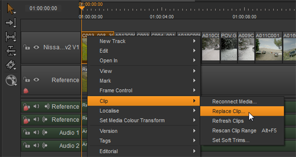

During the post process, media inevitably changes location or form. Nuke Studio can reload or replace your media using the refresh, rescan, reconnect, and replace functions.

Though all four options deal with reloading clip instances, each has a particular use dependent on context:
• Reconnect Media - allows you to redirect the file path when the source file location changes.
• Replace Clip - replaces the selected clip instance with a specified source clip. Nuke Studio assumes that any source clip you choose is acceptable, regardless of timecode.
• Refresh Clips (F8) - allows you to reload the clip instance when the source file location has not changed, such as when work has been done on the clip offline. Selecting refresh only refreshes the clip’s current frame range.
• Rescan Clip Range (Alt+F5) - similar to Refresh Clips, above, but rescan also checks for additional frames that may have been added to the source file and adds them to the clip instance’s frame range.
• Set Soft Trims - sets the files handles on the selected clip(s). SeeSetting Soft Trims for more information.
|
|